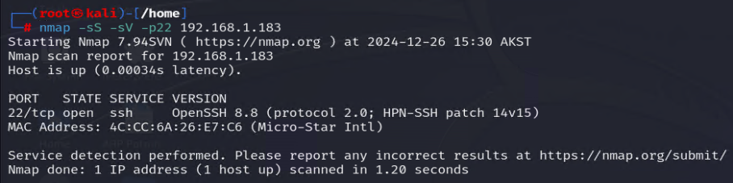
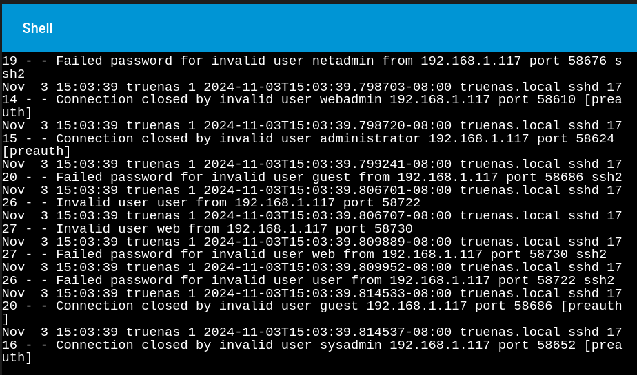
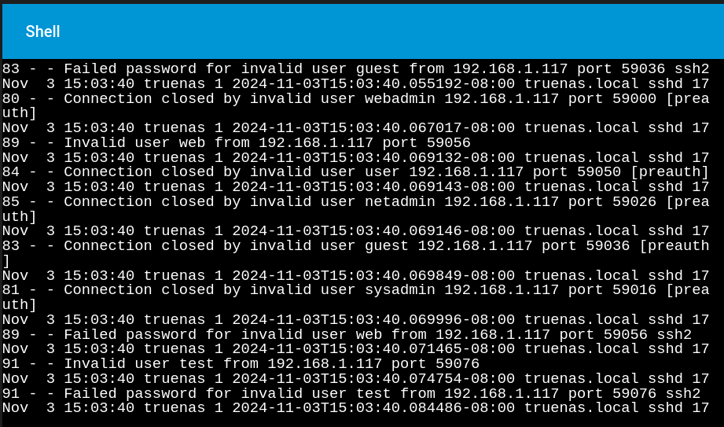
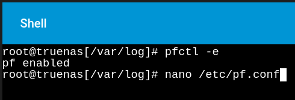

The following is the first set of four offensive and defense labs carried out on a customized machine running TrueNAS 13.1 in a segmented lab environment.
In this scenario, we have a TrueNAS server and a Kali Linux machine running on the segment. Getting started with the offensive activities, the Kali machine performs an nmap port scan and discovers port 22 – SSH is open, then proceeds with a brute force attack using the ssh-brute nmap script.
On the defensive side, the attack is being identified in reviewing the logs on the server through /var/log/auth.log - and when the contents of that file are concatenated – all the brute force attempts from the different account names of the wordlist are shown along with the Kali Linux IP.
Port 22 - SSH is open on the target system
Brute force attack on SSH - port 22 using nmap ssh-brurte script
Brute force attack underway

Log analysis review on the server side.

Here we can see the brute force login attempts using the different usernames from the Kali Linux attacker machine.
 Upon detecting this brute force login attempt, I would immediately check the timestamp of the last log to determine how recent the last attempt was. From there, I would proceed with the following actions.
Step 1 - Enable pf (if not already enabled)
Run the following to see if pf is active:
If pf is already enabled, you'll see an output indicating it's active. If not, this command enables it.
Step 2 - Edit the pf.conf Configuration File
Add the following line to block the IP address. Replace
Step 3 - Apply the New Rules
After editing and saving the file, reload the pf rules to apply the changes and confirm the rule is active with pfctl –sr.
This configuration will block all incoming traffic from the specified IP. You can adjust the rule to target specific IP ports or protocols if needed. This is an example of identifying an actively underway or recent brute force attack on a server – and immediately applying mitigation by blocking the attacker IP using the pf firewall on the server. This puts the activity to a stop while it’s further investigated with further incident response procedures being carried out.